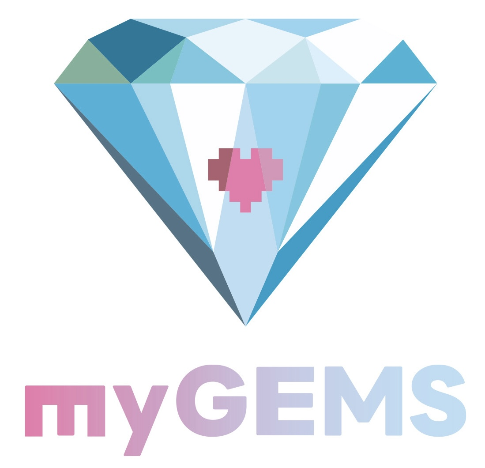

MYGEMS / DX STRUCTURE DIAGNOSIS QUICK
10問で、DXが進まない構造を素早く見える化します。初回面談前の簡易チェックや、ワークショップ導入に適したQuickです。進まないDXを、構造から解く。
会社名などは任意です。結果コピーや印刷時の見出しにだけ使われます。
変革実装力スコア
※本診断は自己回答に基づく10問の入口診断です。個別企業のDX状況を断定するものではありません。より正確な診断には、30問版での再評価に加え、戦略資料、業務フロー、KPI、データ基盤、PoC実績、現場運用状況などの確認が必要です。